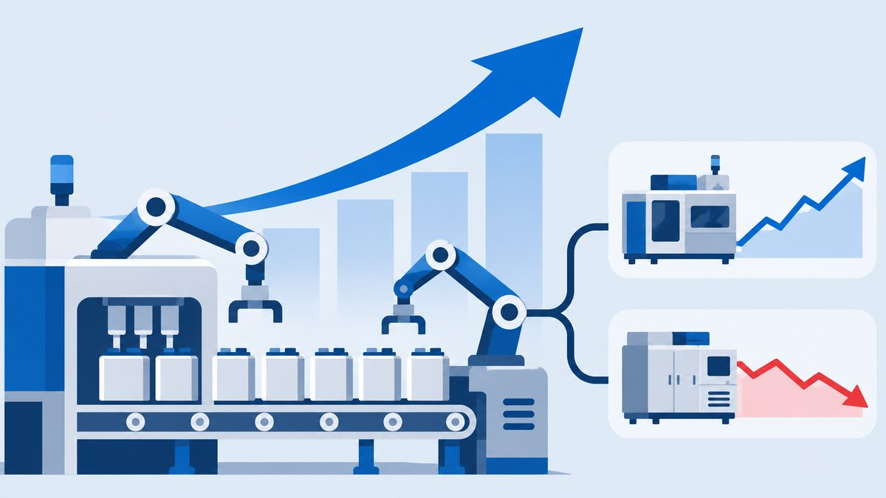

배터리 장비 매출 회복, 이익은 기업마다 갈렸다

[AI 생성 일러스트] 기사 내용을 설명하는 도식이며 실제 사진이 아닙니다.
- 3분기 매출 증가 기업은 33곳 중 19곳
- 톱텍은 3분기 이익으로 상반기 손실을 만회
- 수주 회복이 연결이익으로 이어질지는 기업별 차이
외형 회복과 이익 회복의 간격
국내 배터리 장비업계에서 매출이 늘어나는 기업이 증가했지만 이익 회복은 고르지 않았다. 디일렉이 11월 27일 공개한 33개 기업의 실적 분석에 따르면, 올해 3분기 매출이 전년 같은 기간보다 증가한 기업은 19곳이었다. 같은 기준의 기업 수는 1분기 14곳, 2분기 16곳으로 늘어났다. 반면 3분기에 영업흑자를 낸 기업은 15곳으로 절반에 미치지 못했다.
장비업계는 전기차 수요 정체로 배터리 기업들이 공장 증설을 늦추면서 2024년부터 일감 감소를 겪었다. 이번 보도는 고객사의 시설투자와 장비업체의 신사업 확대를 실적 개선 배경으로 제시했다. 다만 매출 증가 기업이 많아졌다는 사실과 업계 전체의 이익이 회복됐다는 판단은 구분된다. 흑자 기업 가운데 매출도 전년보다 늘어난 곳은 11곳이었다.
톱텍의 반등은 3분기에 집중됐다
톱텍은 1~3분기 누적 영업이익이 92억원으로, 전년 같은 기간 6억원의 15배를 넘었다. 누적 매출은 1558억원으로 22.3% 증가했다. 이익 증가율이 큰 배경에는 낮았던 전년 이익 기준과 올해 3분기의 실적 집중이 함께 있다. 상반기에는 5억원의 영업손실을 냈지만 3분기에 97억원을 벌어 누적 손익을 흑자로 바꿨다.
3분기 영업이익률은 11.8%였다. 주문 측면에서도 변화가 있었다. 톱텍은 3분기에 현대모비스로부터 배터리 조립라인 세 건을 수주했고, 8~9월 공시한 하이브리드차·전기차용 배터리 라인 공급계약 규모는 총 668억원이었다. 3분기 말 수주잔고는 1585억원이다. 계약은 향후 매출의 기반이지만, 잔고 전체가 이미 매출이나 이익으로 반영됐다는 뜻은 아니다.
개별 기업의 회복 양상도 달랐다. 엔시스와 나인테크, 케이엔에스, 필에너지는 3분기 영업손익이 적자에서 흑자로 전환됐다. 반대로 엠플러스와 원익피앤이, 우신시스템, 민테크, 하나기술은 매출이 줄고 적자로 돌아섰다. 엠플러스는 상반기에 142억원의 영업이익을 냈지만 3분기 매출이 전년보다 59.2% 감소하면서 45억원의 손실을 기록했다.
수주가 늘어도 연결이익은 줄 수 있다
피엔티는 수주잔고와 당기 수익성이 다른 방향으로 움직인 사례다. 수주잔고는 2분기 말 1조5510억원에서 3분기 말 1조6970억원으로 늘었다. 조사 대상 가운데 잔고가 1조원을 넘는 기업은 피엔티뿐이었다. 3분기 매출도 1211억원으로 전년 같은 기간보다 12.6% 증가했다. 그러나 영업이익은 11억원에 그쳤다.
영업이익률은 전년 동기 12.5%에서 0.9%로 낮아졌다. 회사는 신사업 설비의 감가상각과 고정비가 연결 수익성에 부담을 줬다고 설명했다. 중국 시안 동박 법인은 올해 6월 양산을 시작했고, 자회사 피엔티머티리얼즈는 7월 연산 6000t 규모의 리튬인산철 양극재 공장을 완공했다. 설비 비용은 실적에 반영되기 시작했지만 신사업 매출은 아직 크지 않았다는 것이다.
장비사업을 중심으로 보는 별도 기준 영업이익률은 10%대를 유지했다. 따라서 연결 실적의 하락을 장비사업 자체의 수익성 악화로만 해석하기는 어렵다. 장비에서 소재로 사업을 넓히는 과정에서 기존 사업의 이익과 신규 설비의 비용이 동시에 나타난 셈이다. 이후 신사업 매출이 증가하면 비용 부담을 흡수할 가능성이 있지만, 제공된 자료만으로 그 시점과 규모를 판단할 수는 없다.
누적 성적과 분기 흐름도 다르다
1~3분기 누적으로 영업이익을 낸 기업은 16곳이었다. 탑엔지니어링은 매출 7301억원, 영업이익 203억원을 기록하며 전년의 적자에서 벗어났다. 윤성에프앤씨와 제일엠앤에스는 3분기에 손실을 냈지만 상반기에 확보한 이익 덕분에 누적 흑자를 유지했다. 누적 실적만 보면 최근 분기의 약화를 놓칠 수 있고, 한 분기만 보면 앞서 쌓인 이익을 충분히 반영하지 못한다.
회복에서 벗어난 사례도 있다. 디에이테크놀로지는 10월 7일 코스닥에서 상장폐지됐다. 올해 1~3분기 매출은 61억원으로 전년 같은 기간보다 80.1% 감소했고, 영업손익은 67억원 흑자에서 18억원 적자로 바뀌었다. 일부 기업의 수주 확대와 실적 반등이 업계 모든 기업의 재무 상태를 설명하지는 않는다는 점을 보여준다.
배터리 장비업계의 이번 실적은 외형 회복이 넓어지는 가운데 손익의 차이는 여전히 크다는 모습이다. 신규 주문, 기존 계약의 매출 반영, 신사업 가동 비용이 기업별로 다르게 겹쳤다. 수주잔고는 앞으로 공급할 장비의 규모를 가늠하게 하지만 이익을 보장하지 않는다. 회복의 지속성은 주문이 매출로 바뀌는 과정과 그 매출에서 어느 정도의 이익이 남는지가 함께 드러날 때 더 분명해진다.
앞으로 볼 변수
- 배터리 장비업계 실적 턴어라운드…톱텍 누적 영업익 15배 · 디일렉 · 2026-11-27
이 포스팅은 쿠팡 파트너스 활동의 일환으로 수수료를 제공받습니다.